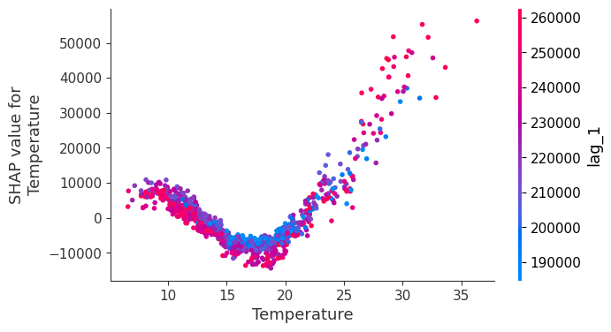
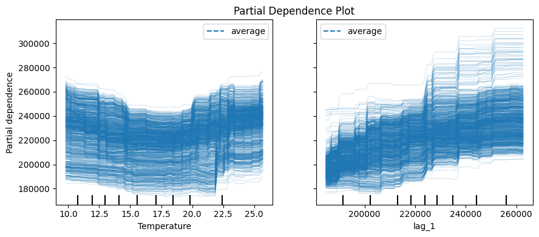

Analisis Forecaster Explainability Menggunakan Skforecast dan SHAP#
1. Analisis Prediksi (Studi Kasus)#
Analisis prediksi yang dilakukan pada studi kasus ini adalah mengenai Prediksi Permintaan Energi Listrik (Electricity Demand) dalam satuan Megawatt (MW) untuk wilayah Victoria, Australia menggunakan dataset historis vic_electricity.
Dari analisis ini tidak hanya menghasilkan angka perkiraan di masa depan (forecasting), tetapi untuk melakukan Interpretasi Model (Model Explainability). Proses ini membongkar keterkaitan non-linear antara faktor cuaca (suhu udara) dan pola konsumsi masyarakat terhadap beban listrik yang dihasilkan.
2. Struktur dan Bentuk Data Training#
Untuk melatih model regresi berbasis pohon (Machine Learning Regressor), pustaka skforecast mengubah data deret waktu (time series) yang awalnya satu kolom linear menjadi matriks tabular yang terdiri dari komponen Input (\(X\)) dan Output (\(y\)).
A. Input (Features / Predictors \(X\))#
Matriks input terdiri dari kombinasi variabel masa lalu (autoregressive) dan variabel luar (exogenous):
Fitur Autoregresif (
lag_1sampailag_7): Nilai beban atau permintaan listrik pada 7 titik waktu (langkah) sebelumnya. Karena data ini bertipe kurang lebih setengah jam (half-hourly), makalag_1adalah kondisi 30 menit lalu,lag_2adalah 60 menit lalu, dan seterusnya.Variabel Eksogen (
Temperature): Data suhu udara riil pada waktu yang bersangkutan. Suhu menjadi prediktor penting karena perilaku manusia dalam menggunakan perangkat elektronik (seperti AC atau pemanas) sangat bergantung pada cuaca.
B. Output (Target \(y\))#
y(Demand): Nilai riil permintaan energi listrik pada titik waktu aktual saat itu yang menjadi target tebakan atau prediksi model.
3. Definisi dan Konsep “Lag”#
Dalam analisis data runtun waktu (time series forecasting), Lag (Keterlambatan) adalah nilai historis dari variabel target itu sendiri pada periode atau langkah waktu sebelumnya.
Mekanisme Kerja Lag pada Data#
Berdasarkan hasil eksekusi data yang diperoleh, perpindahan data target menjadi fitur lag dapat digambarkan sebagai berikut:
Jika pada tanggal 2012-01-08 nilai riil target (\(y\)) adalah 200061.61, maka pada baris data berikutnya tanggal 2012-01-09, angka tersebut bergeser posisinya menjadi input di kolom
lag_1.Pola pergeseran ini merepresentasikan sifat Autokorelasi, yaitu kondisi di mana apa yang terjadi pada waktu sekarang (\(t\)) memiliki keterikatan yang sangat kuat dengan apa yang telah terjadi pada waktu lampau (\(t-1\), \(t-2\)).
4. Proses dan Alur Analisis Interpretasi Model#
Proses analisis pada kasus ini berfokus pada metode Explainable AI (XAI) pasca-pelatihan model menggunakan algoritma berbasis pohon (Tree Regressor). Dua metode utama yang digunakan adalah untuk menganalisis keputusan model SHAP Values dan Partial Dependence Plot (PDP).
A. Analisis Menggunakan SHAP (SHapley Additive exPlanations)#

Melalui grafik sebaran titik (Scatter Plot) untuk fiturTemperature, kita dapat menganalisis bagaimana setiap derajat suhu memengaruhi keputusan model:
Zona Suhu Nyaman (\(15^\circ\text{C}\) s.d. \(20^\circ\text{C}\)): Titik-titik grafik melengkung ke bawah berada di bawah angka 0 (SHAP value negatif). Hal ini mengindikasikan bahwa pada suhu ruang yang sejuk, model akan menurunkan nilai prediksi permintaan listrik karena masyarakat jarang menyalakan pendingin (AC) ataupun pemanas ruangan.
Zona Suhu Ekstrem/Panas (Di atas \(25^\circ\text{C}\)): Titik-titik berubah warna menjadi merah pekat dan melonjak tajam ke atas (SHAP value positif tinggi). Ini membuktikan bahwa semakin tinggi suhu udara, model akan secara otomatis meningkatkan prediksi permintaan listrik secara drastis akibat lonjakan penggunaan AC massal.
B. Analisis Menggunakan Partial Dependence Plot (PDP)#

Grafik garis biru majemuk (PDP) digunakan untuk melihat hubungan kausalitas murni secara terisolasi antara satu fitur terhadap target:
Kurva Karakteristik Suhu (
Temperature): Menghasilkan kurva berbentuk huruf “U”. Ini menjelaskan fenomena fisik yang logis: permintaan listrik akan tinggi saat suhu sangat dingin (penggunaan heater) dan akan naik kembali saat suhu sangat panas (penggunaan cooler).Kurva Karakteristik Historis (
lag_1): Menunjukkan tren naik yang konstan secara linear. Artinya, jika 30 menit yang lalu konsumsi listrik di suatu wilayah sudah tinggi, model akan berasumsi kuat bahwa 30 menit ke depan konsumsinya juga akan tetap tinggi (efek kontinuitas beban).